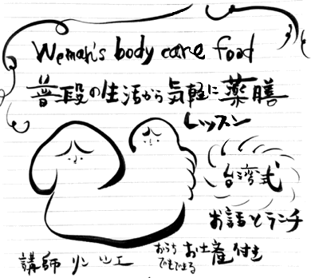

女性の一生に春が三回訪ねます
思春期、出産後、更年期
三つのタイミングをしっかり把握すれば
生き生きキレイな体を維持しやすいです
けれどやはりあの時、精一杯だったのでゆっくりケアしてなかった貴女様に
毎月の生理中と前後の日に
ちゃんと意識しながらケアしたらかなり改善できます
台湾伝統食養生をもとにして
現代生活に受け入れやすい養生法を紹介します
お話とおいしい薬膳粥とスイーツを用意して
お待ちしております
受講料は内容によって応相談です
講師 リン シエ 1987南台湾生まれ北台湾育ち
総合アート修士、台湾国家調理師資格、薬膳調理師習得
台湾と日本で各一回出産の経験があり、現在二児の母でもあり
自分自身の経験を活かしてわかりやすい講座を開講します
産前産中産後の食養教室・生理のケアが大事講座 ・台湾家庭料理教室
自宅教室から出張教室まで承りますメールアドレスは
思春期
初めの月経が訪ねる一年前に
台湾のお家で娘のために色々食養手当を用意します
坐月子•ズオ ユェーズ
産後一か月の黄金期、新陳代謝は普段の13倍に言われます
台湾式の産後ケアは伝統を大切にし、現代医学を取り入れて三段階に分けて食養法します
第一段階 代謝
妊娠中老廃物質いっぱい貯まった子宮と体をキレイにしなきゃ
新陳代謝を良くしてキレイな体を作ります
第二段階 修復
出産の為に大変疲れたお体、開いた骨盤と筋肉を修復します
第三段階 滋補
体の調子を整えてから
もっと元気な体質作る為に栄養たっぷり食養します
これから–回春
産後の黄金期を乗って出産前よりもっと元気、もっとキレイな自分になりたいです
毎月の生理前後も丁寧に体のケアをします
おっばい
授乳期間大事な栄養を補給すること
普段の美乳ケアに常に意識して食養します
更年期
普段ちゃんとケアした女性に体の調子も良いです
台湾最先端の産後ケア食、女性身体ケア食専門会社ー紫金堂の商品を代理しております
-